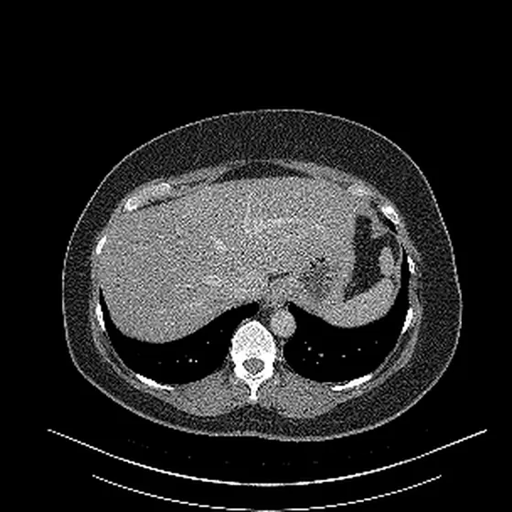

Open your own scan
Choose the disc or the ZIP your hospital gave you. Your browser opens it on this device. Nothing is uploaded, and there is no account.
Your browser will ask whether this page may read the files. Allowing it only lets the page read them.
Where is my scan? Step by step
- Put the hospital's CD or DVD in this computer. A phone cannot read a disc.
- Press Choose the disc or a folder, above.
- In the window that opens, click the disc. It is often called D: or E:, or carries the hospital's name. Then press the button at the bottom of that window.
- Your browser will ask whether this page may read the files. Say yes. They stay on this computer.
Got a ZIP from a patient portal instead? Press Choose a ZIP file and pick it from your downloads.
To check, turn off Wi-Fi and open your scan. It still works, because the scan is read on this device.
Reading…

No scan to hand?
Not at your computer? Open this page there, with your disc: Email this page to yourself
This page shows you your pictures. It can also name each part of the body you point at. It never says whether anything is wrong, and it is not a diagnosis.
What is on your disc
Each box is one set of pictures. Click one to look through it.
Anatomy outlines from your own computer
If you ran rAidiology's CT outliner on your own computer, it saved a small file ending in .raidiology.json.gz.
Add it here to see the organs and bones it outlined, named on your own pictures. It shows anatomy only: which part is which, never whether anything is wrong.
The file holds no name, patient number or date of birth. This tab reads it, and it goes nowhere.
Brightness and contrast
Use Previous and Next, drag up and down on the picture, or press the arrow keys to move through the pictures. Scroll or pinch to zoom in.
rAidiology's CT outliner drew these outlines on the sample. Your own scan opens here as plain pictures, with nothing to install.
Anatomy outlines on your own CT are optional: an AI assistant such as Claude or ChatGPT can add them on your own computer after a one-time setup.
What could not be opened
Help train rAidiology (optional)
You can donate this scan after your browser removes what could identify you. You see everything first. Nothing leaves your device until you say so.